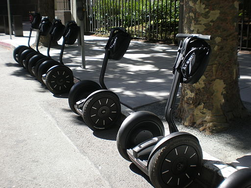

Tours
For those less inclined to explore on their own, Indianapolis offers a great many structured tours, many more than listed here. Scroll down to explore some choice Indianapolis tours and find the perfect one for your chapter!
Monument Cycle Tour
One tour, the Monument Cycle Tour, gives a great view of Indianapolis' most recognizable landmark. On the tour, you get a great view of the architecture, monuments, hear stories, and get some great exercise. Every Friday and Saturday the tour takes place, but if it's raining too hard, or the conditions aren't favorable, then it's cancelled for the day. During, you'll learn information about the Monument Circle, and learn about it's role in the foundation of the city and how the architects designed the buildings around it. Tours depart from the South Bend Chocolate Company, located in the Monument Circle. For a small fee, the tour can be held on a day of your choosing.
White River Park Segway Tours
If you'd like to participate in the tour of a lifetime, this trip is the one for you.  This tour covers all the most interesting parts of Indianapolis: the USS Indianapolis Memorial, NCAA Hall of Champions, Indianapolis State Museum, Memorial Park, Indianapolis and some of the oldest buildings in the city, all on Segway, ending with a relaxing ride along the canal. This tour does however, cost $45 per person, and requires a signed waiver by a parent for students under 18.
Morris-Butler House Tour
Indianapolis' Morris-Butler House tours offer a way to see into the lives of Victorian era peoples, both servants and the wealthy who occupied the house. The tour gives a great insight into the history, culture, and society of the peoples who lived in that time period, and, on top of it, is an awesome experience. The Morris-Butler house was occupied all the way back in 1875, and it held a wealthy family and the servants who assisted them. While touring the building, there is an opportunity to see how these people lived, what their lifestyle was like, and such. The family owned lots of rare furniture, art, and accessories bought just to fill rooms, which were styled with fancy stenciling and wallpaper. The tour is free, and takes place most days.